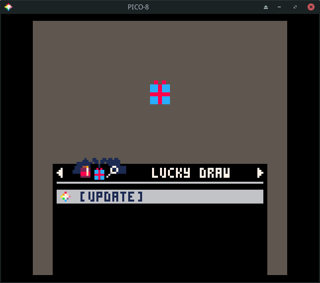
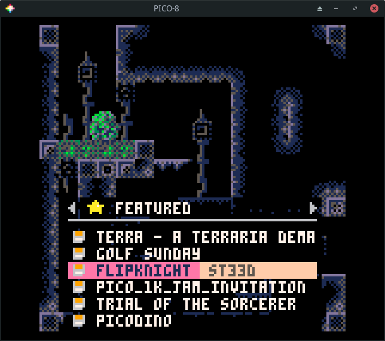
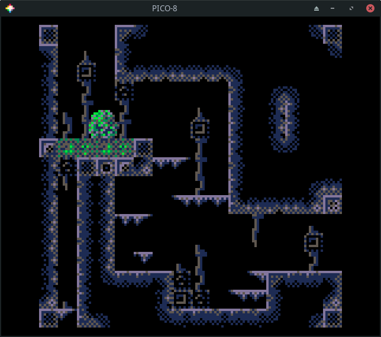
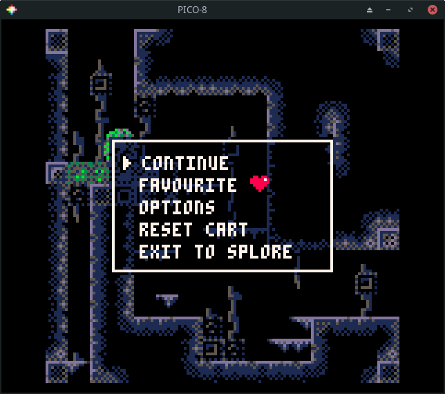
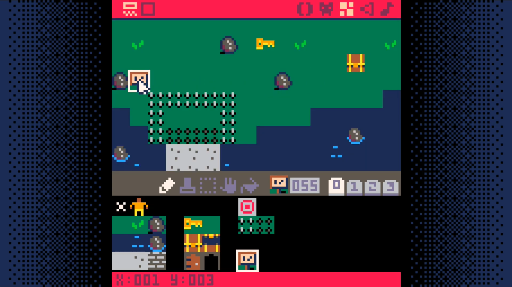

Overview
PICO-8 is like an emulator for a video game console that was never made. But, unlike a typical emulator, PICO-8 includes the ability to browse and download games. What's more, is that the PICO-8 environment includes all the tools you need to create and modify games, whether they are ones of your own creation or ones that you downloaded yourself.
Environment
When you first launch PICO-8, you are presented with a command prompt. This is a bit like the prompt computers that ran MS-DOS would boot to back in the 1980's.
Commands
These are some of the commands you can run. Don't run any of these just yet.
- LS - show the files in the current directory
- RUN (or ctrl-r) - run the current cartridge
- SAVE (or ctrl-S) - save the current cartridge
- INSTALL_DEMOS - install a few demo cartridges
- SHUTDWON (or ctrl-q) - quit PICO-8
- REBOOT - restart PICO-8
- SPLORE - explore community created cartridges
Editing a Downloaded Game
As mentioned earlier, any game you run in PICO-8 can also be edited in PICO-8! This gives you super powers. It allows you to customize any aspect of a game you want! Let's take a peek in a cart to learn about the built-in editing tools.
Run a game that looks interesting (or the Jelpi demo, if you don't have
Internet access). Once it is running, hit esc. If it gives you the option to
exit to splore, choose it and hit esc. Otherwise, just hit esc. This
should put you at a prompt. (It is the > at the top of this next
screenshot.)

Now, hit esc to go into the code editor. This shows you all of the code in
the game you were running most recently.
The currently active tool is highlighted in the top right corner of the screen
(() in the example.)
If the game makes use of mulitple code tabs, these will appear in the top left.
The game in the screenshot only has a single code tab (labeled 0).

To see the sprites (which include character and background graphics), click on
the face icon in the top right. It is just to the right of the () icon.
Unless you are editing the same game as me, the contents of this page will look different.
PICO-8 uses a fixed pallete (those are the colors used in the sprites). This pallete is shown in the top right. In the example, a light gray color is selected. The current sprite is shown in the top left. Sprites are 8 pixels wide and 8 pixels tall.
The available sprites are shown in the bottom pane. In this example, sprite
001 is selected.
There are a number of tools just above the bottom pane. These include a pencil, selection, movement, and paint bucket tool (among others).
Zoom levels, sprite pages, and sprite flags are also on this page, but those will be discussed when and where they are used in the tutorials.

Sprites don't do us much good if they are not placed in a world. Most PICO-8 carts make use of the built-in map memory to display their sprites. The map editor is to the right of the sprite editor. Click on it!

To the right of the map editor is the sound editor. Click on it!

To the right of the sound editor is the music editor. Click on it!

Those are all of the built-in tools. The PICO-8
Manual provides more
details about how to navigate and use the built-in tools. There's also a text
version included in your pico-8 installation! Look for pico-8.txt.
Making modifications to existing games is a great way to become familiar with the tools and to express your own creativity. This is best done with simpler titles as titles that push the limits of the console end up using advanced techniques to cram everything into the limits of the console which makes modifications more difficult than normal.
If you do end up wanting to make changes, hit esc to go to the prompt and
then use save to save the cart under a different name. Then feel free to make
the changes you want. Try them out by pressing ctrl-r or using the run
command. If you decide you don't like your changes, load your previously
saved version. If you like them, save them with ctrl-s or the save command.
Creating Your Own Games
Now that we have explored an exist cart. Let's try making a simple cart.
Get to the prompt and run reboot. This will reset PICO-8.
Hit esc to go the code editor and enter the following.
- shift-L =
L - shift-R =
R - shift-U =
U - shift-D =
D
Hit ctrl-r to run it (or use the run command). You should see a
multi-colored circle that you can move around with the arrow keys.

Run save move_circle if you want to save it.
The Community
From producing lots of great tutorials to publishing creative, fun carts to pushing the boundaries of PICO-8 to their limit, there's a lot to love about PICO-8's community.
This section provides some pointers to help you get started navigating the resources produced by the community along with ideas on how to best start engaging with it.
Splore
The command splore is used to launch an in-process game browser. The splore
tool provides several updatable game lists.
This first of these is the favorites view. It will be empty to start.
Whenever you select a cart, you have the option to tag it as a favorite so it
shows up here.

Pressing the R arrow takes you to the Game Jam section. These are carts
created during Game Jams which are time limited competitions where
participants write a game using a common theme as inspiration.

Press R to see a list of randomly chosen games. If you are tired of going
through the featured list, this is sometimes a good way to find something new.

Press R again to go to a list of new games. These are the most recent
community uploads. The quality of the games in this list is going to be hit or
miss. Not all of them will be complete.

Press R again to see my favorite list, the featured list. These are
usually very high quality games or demos that highlight what is possible using
PICO-8. My kids greatly enjoy going through this list and playing the games
that catch their eye.

The next section is one that lets you search for games. This is helpful if you have a particular game you are trying to find or want to see what the community has made on a specific topic.

The final section lets you browse your local files. These are the same files
you will see by running ls from the command prompt.

Browsing Games
Let's go back to the featured list. Press enter to update the list. This
requires Internet access! It will data about a number of games.
If you don't have Internet access, run the install_demos command to install
and run a few demo carts.

Use the arrow keys to navigate the list.

If you press enter on a game, you will have the option to run or favorite
the game.

Choosing run will start the game. Most games give show a title screen and
main menu. Some, like flip knight do not. Nearly all games can be controlled
using a combination of the arrow keys and the action keys (z and x). z maps to
X and x maps to O. When in doubt, just start pressing the action keys to
see what happens!

Press esc and choose exit to splore if you want to exit the game.

Using PICO-8
This section of the tutorial largely comes from Dylan Bennett's excellent Game Development with PICO-8.
When you first run PICO-8, you start in a mode where you can type in commands. From this mode you can type commands like save, load, and run. You can use the command help to see what other commands you can run from this mode.
Use the ESC key to switch back and forth between editor mode and command mode. When you are playing a game and hit ESC, you'll come back to command mode. Just hit ESC again to go into editor mode.
You'll find notes about each editor and shortcuts relevant to each on the following pages. The shortcuts below are possible no matter which editor you are currently using.
Shortcuts:
- Alt-Right/Left - Next/previous editor
- Ctrl-S - Save
- Ctrl-R - Run
- Ctrl-M - Mute/Unmute
- Alt-Enter - Fullscreen
- Alt-F4, Ctrl-Q - Quit
(Use Cmd instead of Ctrl on macOS.)
Limitations and Specifications
Limitations: A Blessing or a Curse?
As you learn about PICO-8 and the limitations it imposes, you may find yourself wondering why they were put in place when the vast majority of systems running PICO-8 would have no problems vastly exceeding its seemingly arbitrary constraints.
The PICO-8 homepage provides part of the answer:
The harsh limitations of PICO-8 are carefully chosen to be fun to work with, to encourage small but expressive designs, and to give cartridges made with PICO-8 their own particular look and feel.
Constraints inspire and enable creativity. Every decision PICO-8 takes away from you is one fewer you have to worry about. All of that energy can then be turned to working within those constraints to create something amazing.
Specifications
| Specification | Description |
|---|---|
| Resolution | 128x128 |
| Palette | 16 fixed colors |
| Sound | 4 Channel Synth |
| Language | Lua |
| Cartridge Size | 32k (64k with limitations) |
| Sprites | Up to 256 8x8 sprites |
| Map | Up to 128x32 cells |
| Tokens | 8192 |
| Input | 4 directions, 2 buttons |
| Extended Input | Mouse, if in devkit mode |
Palette
PICO-8 uses a fixed color palette. You are restricted to these colors. This saves you from having to agonize over whether you have found the right shade of blue for your character or background or other game element. The limited number of choices accelerates your development flow.
The table on this page comes from lospec. If you are just using the PICO-8 environment, you will never need to know the RGB values for each of these colors. For those looking to expand their use of the palette beyond that, this reference may be useful.

A secret second palette was added in later versions of PICO-8. Accessing it isn't all that straight forward and there are some limitations on its use. It is mentioned here to note its existence, but you may want to wait until you are comfortable developing carts before seeking out the details.
Tokens
One of PICO-8's limits is how much code you can use. This limit is a bit hard
to understand for people new to PICO-8. It's based on something called tokens.
These are basically individual bits of code. For example, something like
x=width+7 takes up five tokens, one token for each part (x, =, width,
+, and 7). You are allowed 8192 tokens of code, so you'll be fine until
you're making a fairly large game. You can see the number of tokens you've used
in the bottom-right of the code editor.
Code Editor
All your code is written here. Even though the characters you see in the code
editor are uppercase, you type them in lowercase. PICO-8's font uses uppercase
characters for glyphs (graphical characters). For example, L, R, U, D, X, and O map to L, R, U, D, X, and O.
You can organize your code into tabs. Due to the limited space available, tabs
only have a number (starting at 0). If the first line of code in a tab is a
comment (i.e. beings with --), the comment will be shown when you hover over
the tab number.
Syntax Highlighting is what causes words and lines to be colored differently. Comment lines have a darker color. Keywords (like function, for, do, if, then, and if are colored pink. Built-in functions like btn, btnp, print, and spr are colored green.
Be on the lookout for words or lines colored differently than you expect. This can help you spot a typo in your code.
The bottom left of the code editor tells you which line you are on.
The bottom right shows the token count, by default. If you click it, you can also view the character count or the compressed size. See the Limitations section for more on why these are included.
Shortcuts
- Alt-Up/Down - Go up/down a function at a time
- Ctrl-L - Move to a specific line number
- Ctrl-Up/Down - Move to the very top/bottom
- Ctrl-Left/Right - Move left/right by one word
- Ctrl-F, Ctrl-G - Find text, or find again
- Ctrl-D - Duplicate the current line
- Tab/Shift-Tab - Indent/un-indent the currently selected line(s)
- Ctrl-Tab/Shift-Ctrl-Tab - Move to next/previous code tab
(Use Cmd instead of Ctrl on macOS.)
Sprite Editor
Sprites are the pieces of art that make up your game. They might be characters, map tiles, pickups, titles, backgrounds, anything. PICO-8 allows you to have 256 8x8 sprites. These are split across 4 tabs labeled 0-3. However, the last two tabs are shared with the Map Editor. So if you have a really big map, you won't be able to use the last two tabs of sprites. But if you're using the last two tabs of sprites, you won't be able to use the lower half of the Map Editor.
Shortcuts:
- H/V - Flip the sprite horizontally/vertically
- R - Rotate the sprite clockwise
- Q/W or - / = - Move to the previous/next sprite
- Shift-Q/Shift-W or _ / + - Move one row of sprites back/forward
- 1/2 - Move to the previous/next color
- Up/Down/Left/Right - Loop sprite
- Mousewheel Up/Down, < / > - Zoom in/out
- Space - Pan around while space is held down
- Right-click - Select the color under the mouse
Map Editor
PICO-8's map tiles use the 8x8 sprites from the Sprite Editor. This means 16x16 tiles will fill an entire screen.
Even though you can have a maximum map size of 128 tiles wide and 64 tiles tall, the lower half of the map actually shares space with the last two tabs of the Sprite Editor. So you need to decide if you want a large map or if you want a lot of sprites. No matter what is drawn in sprite #0, that sprite is used as an "eraser" sprite. You can use it to erase map tiles.
Shortcuts
- Mousewheel Up/Down, < / > - Zoom in/out
- Space - Pan around while space is held down
- Q/W, - / = - Move to the previous/next sprite
- Shift-Q/Shift-W, _ / + - Move one row of sprites back/forward
- 1/2 - Move to the previous/next color
- Up/Down/Left/Right - Loop sprite
- Right-click - Select the sprite under the mouse
Sound Editor
A PICO-8 cart can have up to 64 sounds. Each sound has 32 notes. You can control the frequency, instrument, volume, and effect for each note.
You can also change the playback speed of the whole sound and make sections of it loop. The Sound Editor has two modes: pitch mode and tracker mode. Pitch mode is useful for simple sound effects, whereas tracker mode is useful for music. Below is a PICO-8 music reference to use for tracker mode.

Shortcuts
- Space - Play/stop
- - / + - Go to previous/next sound
- < / > - Change the speed of the current sound
- Shift-Space - Play the current group of 8 notes
- Shift-Click on an instrument, effect, or volume to change all notes in a sound at once
- Ctrl-Up/Ctrl-Down, PgUp/PgDn - Move up/down 4 notes at a time (tracker mode only)
- Ctrl-Left/Ctrl-Right - Switch columns (tracker mode only)
(Use Cmd instead of Ctrl on macOS.)
Music Editor
The Music Editor allows you to create patterns of music using the sounds from the Sound Editor. Each pattern has four channels that can each contain a sound from the Sound Editor.
Playback of patterns is controlled by the three buttons in the top-right (two arrows and a square). If the right-facing arrow is on, that marks a start point. If the left-facing arrow is on, that marks a loop point. If the square button is on, that marks a stop point.
Playback flows from the end of one pattern to the beginning of the next. However, if playback reaches the end of a pattern and finds a loop point, it will search backward until it finds a start point and play from there. If playback reaches the end of a pattern and finds a stop point, playback will stop.
Shortcuts
- Space - Play/stop
- - / + - Go to previous/next pattern
Note: You can edit sounds in the Music Editor, so most Sound Editor shortcuts also work here!
Check out the Resources for a link to a bunch of video tutorials about the sound and music editors!
Coordinates
PICO-8's screen space is 128 pixels wide and 128 pixels tall. This may not seem like a much at first, but you can do a lot in that amount of space!
Notice the coordinate 0,0 is in the top-left and coordinate 127,127 is in the bottom-right. This means positive x goes to the right and positive y goes down. (This may be different from what you're used to, where positive y is usually up.) Also remember that because we start counting at 0, the position 127 is actually the 128th pixel.
Programming Basics
This will not be a full introduction to programming, but it will hit on a few particularly important items. Even if you don't know much about programming, you'll be able to follow along if you just understand these few things. If know programming already, you can skip all this stuff.
Variables
Variables are ways to store information with an easy-to-remember name. As the name "variable" implies, the information stored in the variable can vary, or change. In PICO-8, variables can hold numbers, text, and the value true or false. Here are a few examples of variables:
Some words are reserved and you can't use them for variable names (like the
word function). You also can't start the name of a variable with a number.
Functions
Functions are a list of instructions for the computer that are all grouped together under one name. Functions are usually created if you have a certain set of actions you want the computer to do many different times.
Functions are written with parentheses after the name of the function. This is so you can give the function extra information in case it needs that extra information to do its job. Even if no extra information is needed, you still need to write the parentheses.
Here's an example function called draw_target(). It draws a target shape
using filled circles. Note that it needs an X and a Y coordinate to do its job:
Maybe you noticed something: circfill() is a function too! It's a function
built into PICO-8, so you don't have to write the steps yourself, but it's
still a function. You give it an X/Y coordinate, a radius, and a color, and it
draws a filled circle at X/Y, at that radius, and with that color. And
circlfill() is just one of many built-in functions!
Usually a function just does the job you need it to do and that's that, like
the draw_target() function above, or circlfill(). But sometimes you need a
function to give back, or return, information when it's done doing all of its
steps.
Say you make a function that does a bunch of math, but you want to know the
result when it's done. In other words, you want it to return the result back to
you. Easy enough. You just use return and then specify what you want it to
return.
Here's a real example:
When that function gets run, the number returned would be 40. Since 40 is
indeed greater than 25, the print() function would then happen.
Functions are the backbone of anything you will create in PICO-8. Most games are really just many, many functions strung together, each one making changes to things in the game as the players play. Really understanding how your code moves from one function to another is the key to being able to make great games.
Tables
Tables are a way to store a lot of information all together under one variable name. Most PICO-8 games will use a table at some point or another, so it's good to understand how they work.
When you add a piece of information, or value, to a table, it gets paired with a name or a number called a key. The key is what you use to get the information back out of the table. You can say, "Look up the information stored in that table using this key." Keys are like the index in a book.
If you add values to a table without setting the key, the key will automatically be assigned as a number. Let's see an example of what this looks like.

Now let's see how that looks in code. Take note how we create the player table using empty curly braces. Then we add the values with named keys.
For the items table, we create the table with the values inside the curly braces, but without names. The keys get automatically assigned as numbers.
That's how to get values into a table. But what about getting values back out?
For keys that are names, you can just use table.key, such as player.x or
player.alive. But for keys that are numbers, you use square brackets with the
number of the key inside, such as items[1] or items[3].
If your table uses numbers for keys, you can find out how many values are
stored in a table by using the number sign (#), such as #items. In our
example, this would give you 3. This is useful if you have to loop through
all the values in a table and do something with each value. Here's an example:
This starts i at 1 and counts to #items (which is 3).
Each time, it will print the value at items[i]. Since
i goes from 1 to 3, every item will be printed.
The Game Loop
PICO-8 uses three specially-named functions to create what's called a game
loop. The _init() function happens one time, then _update() and _draw()
happen in a loop until your game ends. Here's the basic structure of the
PICO-8 game loop and what each functions does:
You could put all of your code inside these three functions, but it's
generally not considered a good idea. A better solution is usually to make
other functions that do specific things, and then have _init(), _update(),
or _draw() run those functions.
For example, instead of putting player movement code in _update(), write your
own function called move_player() and run that inside _update().
Here's an example of how it would all look. (Try it out! Type this code into PICO-8 and run it! Don't forget to make sprite #1!)
See how the game loop functions are kept nice and tidy? Now you can see a good overview of how the game works just from those three functions.
When PICO-8 first came out, all your code went in one place. More recent versions have added tabs to the code editor. This provides an additional way to organize your code. The Adventure Game Tutorial makes great use of tabs. The Space Shooter tutorial was written before tabs were in PICO-8. As you work through them, notice how effective use of the tabs feature makes it easier to work with the code in the tutorial.
Note: Not all of the tutorials included on this site follow the guidance given here. As you work through them, you may discover other practices you wish were followed more consistently. Make a note of them and discuss them with your community. You may find others agree and start following your example!
Flappy Bird
This article has its origin in a tweet cart. I was shocked when I first saw it. It was a fully functional game in only 273 characters! I had to learn how it worked.
The question that captivated me was, how small can you make a version of a game and still have it be recognizable as that game? If you distill a game down to its core, what does it look like? If you remove everything you can and then remove some more, when can you no longer call it the same game?
These are some the questions we are going to explore by building up a distilled version of the game Flappy Bird, from scratch.
The game we make will be recognizable as Flappy Bird, but not much beyond that.
This approach provides several benefits. It allows us to focus on the core game mechanics and to forget everything else. We can explore questions about what is essential and what can be added later. We gain a better understand the cost of each addition. We will focus on adding things in a fashion that allows us to playtest them along the way.
The essence of Flappy Bird can be captured in a mere 45 lines of code.
Ready? Let's go!
In Flappy Bird, you control a small bird who is constantly moving forward and must flap its wings to keep itself aflight while carefully timing those flaps so it doesn't run into the pipes that are constantly getting in the way.
Draw and Control a Bird
We start by drawing our bird.

The bird is a red circle outline. The bottom right hand corner of the bird is at 30,y. Since the circ function takes the center of the circle, we pass in 26-y. Forgetting to do this will cause subtle problems later on!
If you want a more solid bird, change circ to circfill.
If you are feeling adventurous, you can create sprite 1 and use spr(22,y-8,1) instead of circ, but there a few cautions to keep in mind to avoid breaking our collision detection logic..
- Be sure to use 22,y-8 and not 26,y-4 or 30,y when drawing your sprite!
- Use an 8x8 sprite.
Having a bird float in the middle of the air is no fun (and it is kind of weird). Let's fix that!
We use O to control our bird. Pressing it causes the bird to flap its wings and gain a little altitude, but gravity is always trying to pull it down.
Since our bird has nothing to avoid and only moves vertically, you may want to wait a bit before trying the next couple of modification ideas.
dy controls our fall rate. Adjust the .6 value down, for flaps to be more forgiving. Change 5 down to require more flapping!
If you want to control the bird with either O or X, change the if to read: if(btnp(O) or btnp(X)) dy-=5.
If you want a bird who can flap nonstop, change btnp to btn. (I find individual flaps to be more satisfying. What is your preference?)
Draw and Control Pipes
Next up, pipes to avoid!
We are going to use a bit of a unique approach to the pipes. Internally, we will cause the pipes to move toward the bird. The description of the code will similarly talk about the "pipes moving". This may seem a bit weird, but it ultimately makes no difference to the visual experience and the simplification of the implementation it enables is well worth it.
- dx is the speed the pipe approaches.
- x is the left hand edge of the oncoming pipe.
- pw is the width of our pipe (which makes x+pw the right hand edge).
If you want the pipes to move across the screen more quickly, adjust dx. Once we have a score, you could consider adjusting it up a bit each time the player scores another 10 points (or even 1 point).
Adjusting the value of x up will increase the space between pipes. Adjusting it down is inadvisable at the moment as it will result in a pipe appearing out of nowhere onto the screen.
If you run the cart, you'll notice that once the pipe moves off the screen, the bird is left all alone! Let's cause a new pipe to appear once the first pipe goes off the screen.
We want until the right edge of the pipe (x+pw) goes off of the screen (x=0 is the edge of the screen) and then call create_pipe() to reset the pipe back to the right egde. If we remove it earlier, the pipes would look like they just disappear! We can delay it if we want the next pipe to come later.
Note: This conditional be written as x+pw<0, but x<-pw is a bit shorter.
Now the bird can flap and fly over (or into) pipe after pipe without end!
Adding Collision Detection
The "flying into" part is what we will fix next, but we will need to build up to it over a few sets of changes.
Generic collision detection does four different comparisons to determine if objects overlap. Since our pipes go off screen, we can eliminate one of these.
Let's start with detecting whether the left edge of the bird (30) is past the left edge of the oncoming pipe (x).
The moment the bird passes the edge of the pipe, the game will reset, but the game resets even if we were way above the pipe!
To correct this, we need to add another check. This one will be whether the bottom edge of the bird (y) is below the top edge of the bottom pipe (bp). Since y values go down, we need to see if y>=bp.
This is a little better. We can fly high above a pipe and the game won't reset, but the moment we fly past a pipe and drop down below where the top of the pipe was, the game resets!
To fix this, we add the final check. We look to see if the left edge of the bird (30-8 or 22) is not past the right edge of the pipe (x+pw).
With that, the game should never reset on us unless the bird hits a pipe.
Adding a Score
Let's add a score to keep track of how many times we pass a pipe without getting hit.
This displays a score, but we never increment it! The question is, when should we increment it?
This one is a bit tricky. We need to detect the moment the left edge of the bird passes the right edge of the pipe without hitting it. This occurs when x+pw==22-1 which translates to x+16==21 or x==5 so if(x==5) s+=1. This is technically correct, but if you try it, it doesn't work.
The reason is dx=2. When x starts at 128 and decreases by 2 each frame, it will never equal 5. You may be tempted to just say if(x<5) s+=1, but then the score will increase for several frames after the bird passes the pipe and before it moves back to the righthand side of the screen.
I thought about maintaining a boolean to track whether we have increased the score since the last pipe creation. I even had it implemented at some point, but it was cumbersome and complex.
The solution I settled on and recommend is to use a check of x==4. (If you changed dx=2 in _init(), you may need to adjust this.)
Now the score will increment (and only increment once) when you pass a pipe.
Adding Another Pipe and Randomness
You could argue this is a complete game. We have a way to fail and we have a score we can try to beat, but Flappy Bird games require that you go between two pipes so let's add a top pipe.
With these changes, we now have an opening we have to try to get through, but you'll notice that it is always at the same height.
Let's add some randomness to make the game a bit more challenging.
Why this equation? A few reasons. The screen is 128 pixels tall. If rnd(88) returns 0 then the top pipe will be 20+0-20 pixels from the top of the screen. If rnd(88) returns 88, then the bottom pipe will be at 20+88+20 which is right at the bottom of the screen. If you don't want that, decrease 88 by the same amount you increase the 20+.
If you want a smaller opening, decrease the +20/-20. The current calculation gives you a 40 pixel tall opening.
A subtle point worth mentioning is the call to flr. rnd returns a floating point value and this messes with our scoring logic. By flooring it, we ensure that x==4 will be true if the bird passes a pipe.
If you want a laugh, change y+=dy to y=p. That's what I call precision flying!
Summary and Next Steps
With that, we have completed our distillation of Flappy Bird. The core game mexhanics are all there. It may not look like much, but if you give it a fresh coat of paint by changing the rendering logic, you can go from this...
to this...
They don't look like the same game, but they are! All that was changed was swapping out primitive drawing functions for sprite drawing functions and adding a background.
If you wanted, you could even keep both rendering options and allow the player to choose which to use (or even switch during the middle of a round)!
Where you go from here is up to you, but here are some ideas to get you started.
- Add more than one pipe. Experiment with how far apart they are. Keep it constant or add some randomness or change it with the score.
- Change the rendering logic. Add animations.
- Add sounds and music.
- Increase the speed over time.
- See how small you can make the cart. I have a version that is only 206 characters!
Here is a very polished flappy bird like cart to give you additional ideas. Note the use of sounds, music, different bird sprites, the cloud trail behind the bird, the stylized pipes, etc. Download
You have already duplicated the core mechanics of this game! The rest is just additional incremental changes to the foundation you already have! Take it a step at a time. Think about the next small change you want to see and devise as small an experiment as possible to try it out. Rinse, repeat, and rejoice!
Adventure Game Tutorial
The content in this subsection comes from the "PICO-8 Top-Down Adventure Game Tutorial by Dylan Bennett.
- Original youtube playlist of the tutorial series
- Official homepage for the tutorial
- Other PICO-8 tutorials from the author.
It is also based on this write-up of Dylan's tutorial by John Lehmann.
Preview
Here is what you will build over the course of this tutorial.
DownloadOther Examples
Here are some screenshots of games others have made following this tutorial.


This is a game made by the tutorial's author that is based on the framework built in the tutorial. It adds a few additional features not covered in the tutorial, but is a great example of what can be done with this foundation.
DownloadOther Top-Down Games
These are games that make use of a top-down perspective. Perhaps one of these will give you inspiration about what you want to include in your game?
Puzzle Cave is a great example of a game successful enough to lead to sequels. Here's the original. Notice that from a layout design standpoint, this isn't much more complex than the adventure game tutorial.
DownloadSequels usually add more than just additional levels. They often include new item or enemy types as this one does.
DownloadThe third installment of the game uses a different theme than the other two.
DownloadGames are often built around a core mechanic. This is a fun little game that more or less only has the core mechanic. As you play, think about what would be needed to take this from a concept to a finished product.
DownloadSome games keep you guessing. This one has several surprises just within its first few moments.
DownloadHere's a game that doesn't look much different than the adventure game tutorial, but it adds an inventory, dialog, the ability to inspect items, etc.
DownloadThe Map
Start by going to the sprite editor and drawing nine sprites:
- grass, fancy grass, and rock
- water, fancy water, and water rock
- road, fancy road, and wall
Here's an example of what they might look like:
Toggle sprite flag 0 on the rock, the three water tiles, and the wall sprite.

Draw a Map
Now that you have some sprites created, lets use them to draw a map for our game.
Head on over to the map tool (third icon from the left in the top bar).
Once you fill the first screen, add another. To do so, you'll need to pan the map by holding space and dragging with the mouse.
Here's what you might want to put on the second screen.

Here's what the map looks like zoomed out with both screens populated.

Game Loop
Create the main game loop. Put this in the 0 tab of the editor.

Map Code
Create the code that draws the map. Click the + button to create tab 1 and put this code in that tab.
End Result
DownloadThe Player
Draw a sprite for the player.
Click on the + in the code editor to creat tab 2. This will be used for the code related to the player.
Call these functions from the game loop tab (tab 0).
End Result
Save your changes with ctrl+s. Run them with ctrl+r. You should see your player displayed on the map. The player cannot move around yet. We'll add some movement to the player in the next section.
DownloadMovement
Create a sound effect for bumping into an obstacle.
Do this by going to the sound editor. Change the settings of the sounds to
match those you see in the screenshot. Press space to play your sound to test
it out.

Add two functions is_tile and can_move to the map code tab (tab 1).
Add a function for moving the player to the player code tab (tab 2).
Note: to get the arrow characters, use shift+L, shift+R, shift+U, shift+D.
Call this function from function update in the game loop tab (tab 0).
End Result
Save your changes with ctrl+s. Run them with ctrl+r. You should now be able to move your player around the screen, but once you go off of the screen, you are no longer able to see them. In the next section, we will make the camera follow the player so we can explore more of the map.
DownloadCamera
Have the camera follow the player around the map.
Add code to set the camera to the draw_map function in the map code tab (tab 1).
- divide the player's x and y coordinates by 16
- round down
- multiply by 16
- convert mapx, mapy to a pixel coordinate by multiplying by 8
End Result
Save your changes with ctrl+S. Run them with ctrl+R. The camera should now follow your character from screen to screen. Wondering a world without being able to interact with it isn't all that interesting so lets add some things the player can pick up in the next section.
DownloadKeys
We are going to add items for our player to interact with in our world. One will be a key they can pick up. The other will be a chest they can open.
You will need to draw two sprites for each of them.
For the key, the first will be what the key looks like when it can be picked up. The second will be what the tile should look like after the key has been picked up. In the example, it looks just like the grass tile.
You may ask, why not just reuse the grass tile? Why draw a duplicate? The reason is that it greatly simplifies the code we have to write to handle picking up keys.
Whenever the player interacts with a key tile in our world, we will simply replace the sprite that received the interaction with the sprite immediately to the right of it in the sprite sheet.
This means that it is very important that the tile without the key be immediately to the right of the tile with the key!
Go ahead a draw the two key sprites now. You will want to set sprite flag 1 on the key (but not the tile without the key). Sprite flag 1 is what we use to determine if the player can interact with a tile.


For the chest, we need a sprite showing a closed chest and one showing an open one. The closed chest needs to have sprite flag 1 set on it.
Just as with the key sprites, it is very important that the closed chest sprite be immediately to the right of the open chest sprite.

Make a sound effect for the pick-up key sound.
Go to the sound editor. Switch from sound 00 to sound 01. Try replicating
what is shown in the screenshot or feel free to make up your own sound.

Now we need to add the code that allows the player to pick up keys. Interacting with either the key on the ground or the chest will give the player a key.
Add two functions, swap_tile and get_key, to the map code tab (tab 1).
The swap_tile function replaces the current tile with the tile immediately to
the right of it in the sprite sheet. This is why we had to draw the key and
chest variants where we did.
The get_key function increases the count of the keys the player is carrying
by one, swaps the tile to show that the player successfully interacted with the
tile, and plays a sound to give an audible indication of the action.
Just adding these two functions changes nothing in our code. We have to call one of them from somewhere.
Add a function called interact to the player code tab (tab 2).
This function checks to see if the tile is a key tile. If it is, it calls the
get_key function to pick up the key.
Now call this function from the move_player function.
End Result
Save your changes with ctrl+S. Run them with ctrl+R. You should now be able to have your character pick up keys, but you will not be able to see how many keys your character is holding. We will fix that in the next section.
DownloadInventory
When the player holds down the X key we'll show how many keys the player has
in their inventory.
Create a new tab for inventory code. It should be tab 3. Add a function
called show_inventory to it.
Then call this function from the _draw function in the game loop tab (tab 0).
.
You can use shift-x to get the X glyph.
End Result
Save your changes with ctrl+S. Run them with ctrl+R. You should now be able
to pick up a key and then press X to see how many keys the player has in their
inventory. Next, lets add a way for the player to use the keys they collect.
Doors
What good are keys if you cannot do anything with them?
Let's fix this by adding doors that the player can open with their keys. First draw a pair of sprites: an closed and an opened door. Just like with the key and chest sprites, be sure to put them right next to each other. This allows us to use the swap_tile function to open a door.

Add a sound effect for opening a door. This should be sound 02. Replicate
what is in the screenshot or create your own custom door opening sound.

Add a function open_door to open the door to the map code tab (tab 1).
This function gets called in the interact function, which is in the player code tab (tab 2)..
End Result
Save your changes with ctrl+S. Run them with ctrl+R. You should now be able to pick up a key and use it to unlock a door.
DownloadAnimate Tiles
In this step we add animated tiles. Animated tiles bring the map to life. Here we'll use them to make a spike trap that the player has to navigate through.
Create a pair of sprites, one for the spikes up and one with the spikes down. The animation will have cause the two sprites to flip between each other.
The tile with spikes up should have two flags set: flag 3 (anim1, or step one of the animation) and flag 6 (lose), which will cause the player to lose if they step on them.
The tile with spikes down should have one flag set: flag 4, (anim2, step 2 of the animation).

Add two variables to the map_setup function in the map code tab (tab 1).
Add a new function unswap_tile to the map code tab (tab 0). Note that this function is nearly the same as swap_tile and so you can use copy and paste to create it (select the lines, ctrl-c to copy, and ctrl-v to paste)..
Add a new tab called animation code (tab 4). Add a function named toggle_tiles to this tab.
Add a new function called update_map to the map code tab (tab 1).
Finally, call the update_map function from the _update function in the game loop (tab 0).
End Result
Save your changes with ctrl+S. Run them with ctrl+R. Your animated tiles should change about once every second, but there still isn't a way to win the game. Lets add that next.
DownloadWinning and Losing
Add a new sprite that the player has to move over to win the game.
Set the last flag on this sprite. This is what the game will use to know the player has won the game.
Add game_win and game_over to _init in the game loop tab 0.
Add a new code tab to hold the win/lose code. This will be tab 5.
In this tab, add two new functions: check_win_lose, draw_win_lose
Change _update to only run if not game_over and call check_win_lose
Change _draw to only draw if not game_over else draw_win_lose
End Result
Save your changes with ctrl+S. Run them with ctrl+R. You should now be able to walk into spikes to lose and walk into the target to win. Next, we will add a way to easily reset the game.
DownloadTrying Again
Add a way for the player to restart the game when they win or lose.
Add the following else condition to the _update function.
Add the following code to the draw_win_lose function
End Result
Save your changes with ctrl+S. Run them with ctrl+R. You should now be able to have reset the game after winning or losing.
Congratualations! This marks the point where you have a fully functional game!
You have an interactive world with a goal, obstacles to achieving that goal, the ability for the player to win or lose, and the ability to reset the game after a game over event.
Next, we will add text to the world to enable you to provide the player more guidance on what to do in the game.
DownloadBonus Step: Adding Text
This step will be a bit more involved than the previous steps. If you have made it to this step, you will definitely be able to complete it. Just take it slow and don't rush.
Create a sign sprite.

Place two of them. If you don't place them at x=1,y=3 and x=7,y=3 you will need to update the code to reflect where the signs are placed in your world.


Add text=5 to the tile settings in map_setup. We are going to use this
to trigger the display of text to the user.

Now, let's add some code to make use of this tile type.
In tab 0, add a call to text_setup
Modify the _update call to only update the game state if there is no active text displayed.
In _draw, call draw_text after drawing the map and the player.
In the player interaction code, tab 2, add a check for the text tile type.
Add a new tab. This will be tab 6. We will put the text related code here.
Save your game and run it. With any luck, you should be able to walk up to and read each sign.


This opens up a world of possibilities. It allows to add Non-Player Characters (NPCs) that can speak with your character. Signs can provide instructions or warnings. You are able to tell your character's back story through dialog or notes or other narrative devices.
Result
DownloadBonus Step: Unlimited Sprite Types
We have been using sprite flags to differentiate between the different sprite types. This limits us to a maximum of 8 sprite types.
To overcome this limitation and support an unlimited number of sprite types, we are going to switch from using sprite flags to explicitly enumerating all of the sprites of each type.
In map_setup, we currently have this mapping of sprite types to their flags.
Change each of these to be a list of all of the sprite numbers for each sprite of that type. If you very closely followed along to this point, you should be able to copy these values. If you were more casual in where you placed each sprite type, your numbers will be different. Check each of these values against your setup.
Replace the call to fget in is_tile in tab 1 with this:
Once you have made these changes, hit ctrl-s to save your game and ctrl-r
to run it.
You will want to test to verify that all of the sprite types work. That means you will want to:
- Attempt to walk into all wall tile types (e.g. water, wall)
- Pick up all key tile types (e.g. the key and the chest)
- Step on all spike tile types
- Walk on all non-wall types (e.g. grass, stone)
If a tile isn't behaving as you expect, double check that the number for the
sprite is in the correct list in map_setup.
New Tile Type
Once you have verified all sprite types work, lets make use of the added flexibility by adding a new sprite type.
We are going to change the chest so it gives us gold instead of a key. Modify
map_setup. Remove sprite 36 (the chest) from the key list.
and add it to a newly created gold list.
Picking up gold does us no good, if we don't keep track of it. Lets modify
make_player in tab 2. Put this at the end of the function.
With a place to store it, we can add a function to allow us to get it. Copy
get_key in tab 1 and modify it to create get_gold.
Now we just need to update show_inventory in tab 3 to show the player how
much gold they have. Start by making the rectangle 6 pixels taller by changing
invy+24 to invy+30. Then add this line to the end of the function.
Save and run the game. The gold in the player's inventory should start out at
0. Open the chest and show the inventory. It should show 5 gold.
If you made it to this point, congratulations! You now have the ability to add an unlimited number of sprite types. Here are just a few of the possibilities:
- Chests that hold specific items
- Chests that hold a variable amount of gold
- Keys that only open certain chests or doors
- Items needed to complete quests
- etc
Result
DownloadA Space Shooter in 16 Steps
This is a fun take on a tutorial format. It shows how to make a spaceshooter, but instead of creating videos or a written tutorial, it uses a series of 16 animated images.
Local versions of the origianl images are inlined below. Each of the nested sections is devoted to a single image. The image is dispalyed at the top of each page. If you want to pause or otherwise control the playback, press the play button to switch to playing a video version of the same content.
If all of that sounds like too much work, there are written instructions on each page so you don't have to mess around with the vidoes, if you don't want to.


01. Draw ship on screen
{kind=link}
Let's start by creating a ship sprite in the sprite editor.

Go to the code editor and enter this code in tab 0.
Now let's draw the ship on the screen!
The _init function creates a table to hold properies for the ship. We will
start with its x and y coordinates. This is how we will know where to draw
the ship on the screen.
The _draw function displays sprite 1 on the screen at the x and y
coordinates in the ship table. Note: if your ship is not in the sprite
sheet at location 001 (as shown in the screenshot above), you will need to
change the first parameter to spr to match.
End Result
Download02. Animate Propulsion
{kind=link}
In this step, we will create a ship propulsion animation.
Start by modifying the ship we drew in the last step.
Tip: Press up to shift the ship up a pixel. This will give you the space you need to add the jetstream pixel without having to redraw the ship!

Now create a second ship where the jetstream pixels swap.
Enter this code on tab 0 in the code editor.
Hit ctrl-r to run the game. A ship will appear with an animated jetstream!

End Result
Download03. Basic Ship Movement
{kind=link}
In this step, we will add code to move the ship around the screen.
At the end of the _update function, add an if statement for each arrow key.
Tip: After typing the first if statement, hit ctrl-d to duplicate the
first line. Then edit the new line. This will save you some typing.
On each frame, _update new checks to see if an arrow key is being held down.
If it is, it changes the pixel coordinate of the ship by 1 in the appropriate
direction.
Hit ctrl-r to run your cart and try it out!
End Result
Download04. Fire Laser Bullets
{kind=link}
Update _init to have a table to hold information about all of the bullets.
Now add a fire function right after _init. It creates a new bullet and add
it to the bullets table.
sp is the sprite to display. x and y indicate where to display the ship on the screen. dy is how far to move the bullets up the screen on each frame.
Bullets move after being fired. Add the code to do that in _update.
We will need a way to trigger the firing of a bullet. Add this if statement at the end of _update. It will cause a bullet to fire if you press X.
Note: We use btnp instea of btn to limit the rate of firing.
Let's display the bullets.
Finally, let's actually create the bullet sprite so we have something to draw!

Hit ctrl-r to run the game and then press X a few times. You should see something like this.

Don't get carried away and fire too many! The code we wrote in this step has a fatal flaw. It never forgets about any of the bullets that have been fired. As bullets are fired an ever increasing amount of memory is consumed. It will also take an ever increasing amount of time to update the position of the bullets and draw them. Taken to the extreme, it has the potential to crash the game or make it unplayable.
This isn't a safe play to remain so we will address this in the next step.
End Result
Download05. Remove Bullets
{kind=link}
The last step ended with a warning about a defect in our game. Defects happen all the time when we code so it is good idea to learn how to find, reproduce, and fix them.
Let's imagine that a player of our game reported a bug complaining that the game was exhibiting unbounded resource consumption. The best bug reports come with steps to reproduce, but we are not always so lucky.
Without steps to reproduce, the first step is to develop a theory for what could be leading to the behavior described in the report. In this case, our game is really simple. We display a single ship, can move it around, and can repeatedly press a button to fire bullets.
Our game displays itself at 30 frames per second. It is theoretically possible that something in the display logic has a memory leak, but such a defect would most likely be showing up in other games. As a general rule of thumb, don't blame your tools! Most of the time the problem is in the code you have just written and not in a tool that has gone through a rigorous testing process.
Looking back at the code we've written, the only place where we accumulate additional state instead of just overwriting it is the code to add new bullets so that seems like the best place to focus.
Now that we have a theory (that the bullet handling code is causing the resource consumption), it would be nice to be able to prove it.
Let's add some code to illustrate the problem. We will display the number of bullets we are tracking. If the bullets are not being cleaned up, the count should only ever go up.
Hit ctrl-r to run the game and fire some bullets.
In the screenshot above, we have fired a total of 10 bullets, but only 3
are visible on the screen. This clearly indicates the problem. We should only
be tracking bullets that are visible. Anything that has gone off the screen is
a waste of memory and processing time.
That gives us an outline of what the fix should be. Let's implement it.
If a bullet's x or y coordinates ever go outside of the screen bounds, we
can safely get rid of it. The screen bounds are 0-128.
Before we test it, let's make a change to our bullet sprite to the bullets stand out a bit more.

Run the game with ctrl-r and let's see if we can get the number of bullets
being tracked to exceed the number of bullets on the screen.

The numbers now match no matter how many bullets we fire. Success! Bug fixed and crisis averted!
End Result
Download06. Draw Enemies
{kind=link}
Start by adding a table to track enemies. Populate it with 10 enemies.
At the end of the _draw function, add code to display the enemies.
Finally, let's add an enemy at location 017.

Press ctrl-r to run the game and you should see some enemies! You won't be
able to destroy them and they don't move, but it is a start!

End Result
Download07. Move Enemies
{kind=link}
In _init, update the enemy creation code.
In _update, add code to change the position of the enemies.
Hit ctrl-r to run the game. You should see the enemies moving down the screen
in a circular pattern.
The enemies cannot hurt the player and vice versa. Come to think of it, the player doesn't even have any health. Let's explore that next.
End Result
Download08. Points and Health
{kind=link}
Let's add a way to keep track of how much health the player has left. We will use the seemingly ubiquitous measure of hearts.
Create two new sprites. The first represents a heart the player has and the
second represents the loss of a heart. These should be placed at locations
033 and 034, respectively.
The player will have a total of 4 possible hearts. Let's give them 3 so we can test the display of the missing heart.
At the end of _draw, add the hearts display logic.
Press ctrl-r to run the game. You should see 3 red hearts and 1 gray
heart in the upper right corner. The hearts should display on top of any
enemies that pass by. If not, double check you added the hearts display logic
at the end of _draw and not any earlier.
Having a way to measure player health is good. Now we need a way to reduce it! It would also be good to be able to damage those enemies with our trusty laser cannon.
Implementing either of these first requires that we take a detour into the land of collision detection. This is a vital topic for just about all games.
It will take us a few steps to get through it, but it will be worth it as it unlocks much of what follows it.
End Result
Download09. Collision 1: Cleanup and Prep
{kind=link}
We are going to make a few minor changes. The first is just a cleanup task.
The variable t is now initialized within _init. This is just good practice.
It keeps all of your variable initialization in a single location.
The ship is now placed 40 pixels farther down on the screen. This is a more
traditional starting location for a ship in a space shooter.
The ship now holds a p property, which will be used to track how many points
the player has scored.
The addition of p makes the ship initialization a bit too long so we
changed the formatting so it is split over multiple lines. This makes it eaiser
to scan the code.
The final change is a reduction of the number of enemies created from 10 to
4. Having fewer entities in the game makes troublshooting collision detection
algorithms a git easier.
Of the changes we made, only the change to the number of enemies should be visible. Verify that by using ctrl-r to run the game.
With our bullet defect fixed, we no longer need to display the number of bullets in our world. Let's reuse it to display the number of points that have been scored.
Let's prep for the addition of collision detection. Put this function above the fire function.
In _update, call the collision function for each enemy.
Hit ctrl-r to run the game. The only visible difference should be that firing a bullet no longer increases the count in the upper left corner.

End Result
Download10. Collision 2: Define Boxes
{kind=link}
OK. This is a very code heavy step. It is merely setup for the next step.
Start by adding a box property to the ship table. This defines the
collison box of the ship. If the bounds of this box overlap with the bounds
of an enemy's box, the player should lose a heart.
Add a box property to the enemies.
Next, we add a box to our bullets. If a bullet's box intersects with an enemy's box, the enemy should receive damage or be destroyed. Bullets are destroyed by the impact.
This bounding box is smaller than the one for either enemies or the ship since the bullet doesn't fill its tile.
The function abs_box goes above the placeholder coll function we added in
the last step. The box properties we added just tell us the size of the box.
To actually compute whether two objects on screen intersect, we need the pixel
coordinates of the box.
That is what this function does. It adds an object's x and y coordinates to
the box's properties. It translates from the relative coordinates of the
box to its absolute coordinates.
This next change sets us up for calculating whether there was a collision
between two boxes. It takes two entities (A and B) and gets the screen
coordinates of the bounds of their bounding box.
What do we have to show for all that typing? Nothing (just yet), at least, not that we can see visually. We did plenty conceptually.
We added bounding boxes to our ship, enemies, and bullets. We can compute the
absolute (screen) coordinates of the bounding box for one of these entities. We
also updated our coll function to compute the bounding box for two different
entities which will be used to start causing damage to the ship, enemies, and
bullets.
End Result
Download11. Collision 3: Collide Boxes
{kind=link}
Let's finish the implementation of coll.
This is the only code change shown in the original step 11. The video shows bullets destroying enemies and the score incrementing by one with each enemy destroyed, but if you try running the game now, that won't happen.
Luckily, the missing code is modified in step 13 so we can recreate the
original behavior. Add this to _update.
Hit ctrl-r to run the game. Fire a few bullets with X. When one of them
hits an enemey, the enemy should disappear. The score should increment by one
with each enemy you destroy.

End Result
Download12. Change states
{kind=link}
There's no way for the player to lose the game. In this step, we are going to introduce the concept of game states. We will have two.
The first we will call the game state. It means we should run the game loop
which controls the enemies, allows the player to move, etc.
The second we will call the game over state. In this state, we don't want to
show the enemies or the player. You shouldn't be able to control the ship. We
just want to display a message letting the user know they lost.
There are many different ways to represent these different states and to control what happens in each of them. In this tutorial, we are going to use a fairly advanced, but extremely elegant technique.
PICO-8 uses the Lua programming language. Functions in Lua can be redefined at
runtime. This makes it possible to change (whle the game is running!) the
_update and _draw functions PICO-8 calls during each frame.
The way we do this is by simply assigning the name of another function to the _update and _draw identifiers.
For example:
The current _update and _draw functions represent what should happen when we are in our game state. These will be renamed and we will add new functions to call when we are in our game over state.
start is the function that will replace assign the game state functions.
Add a call to it at the end of _init.
Add these functions right after _init.
Rename the existing _draw function to draw_game.
Hit ctrl-r to run the game. The game should run just as it did before as we
haven't added any code to change the game state. That's coming next.
End Result
Download13. Health, Game Over, Immortaility
{kind=link}
Let's make it possible to lose the game!
Start by adding two properties to the ship. t will be used in some animation calculations. imm is used to indicate if the ship is temporarily invulnerable.
The h=4 in the above snippet isn't a typo. Having the starting number of ship
hearts set to 3 was great for testing the missing heart display
functionality, but we've done that so we no longer need to penalize the player,
especially since we are about to enable them to get hurt!
A couple of steps back, we added a placeholder to check if the ship collided with any enemies. It is time to implement that logic. Add this to update_game.
First, we check the imm flag. If it is set, the ship needs to be invulnerable
for a full second (30 frames). Once that time has passed, clear the flag and
reset the ship.t counter.
As we loop through the enemies, check if the ship collided with the current
enemy. If so, set the imm flag to give the ship temporary invulnerability.
Reduce the number of hearts by one. Check to see if we are out of hearts. If we
are out of heats, transition to the game over state to let the player known.
In draw_game, only draw the ship if it is not invulnerable or for ever other four frames, if it is.
Hit ctrl-r to run the game. Move the ship so it is in the path of the
enemies. The number of hearts should reduce by one each time it is hit. After
each hit, the ship should flash off and on periodically over a second before
becoming vulnerable again.

Once the last heart is lost, the game over screen should be displayed.
At this point, we have something that is starting to feel like a real game. The ship can fire bullets which destroy enemies, it can be damaged by the enemies, and once all its hearts are lost, the game ends!
End Result
Download14. Explosions
{kind=link}
Let's make the enemies explode when they are destroyed.
Explosions are different from enemies or bullets so we need a table to track them. Put this in _init.
Right above the fire function, add the explode function.
In update_game, put this explosions loop right before the loop over the enemies.
In the bullets loop of update_game, add a call to explode.
In draw_game, add a loop to draw all of the explosions.
In the video, the score flashes during the explosion animation. The code to flash the score is not in the video. Part of it belongs in the snippet we just entered.
For now, this is an exercise for the reader to add.
Hit ctrl-r to run the game. Fire bullets with X. Whenever an enemy is
destroyed, an expanding, flashing circle should be displayed for about half a
second before it disappears.

End Result
Download15. Stars
{kind=link}
Let's add a moving star field. It will help give the illusion that the ship is moving through space!
In _init, add a stars table and populate it.
Each star has a random X and Y position and a random speed.
In update_game, add a loop to update the stars before the explosions loop.
We move the stars down the screen at a speed of st.s pixels per frame. Once
it goes past the bottom of the screen, we move it back to the top of the screen
and give it a new random X position.
Stars do not need to be deleted since we continually reuse them. We will only ever have 128 stars in our table.
In draw_game, add a loop to display our stars.
Hit ctrl-r to run the game. You should see a continually moving star field
background!

End Result
Download16. Enemy Movement and Respawn
{kind=link}
The game as it stands now isn't very challenging. There are four enmeies. They have a very predictable position and movement pattern. Once they are defeated, no other enemies appear and you are left zooming through a star field with no other threats.
In this, the final step of the original tutorial, we will add enemy respawn so that once a wave of enemies is defeated or leaves the screen, another wave takes their place.
Start by deleting the loop that creates the enemies out of _init. We are
going to move it elsewhere.
Create a respawn function just after _init.
In update_game, add a check before the enemies loop to call respawn if
there are no more enemies. Modify the enemies loop to randomize their movement
patterns a bit and to remove enemies that have left the screen.
Hit ctrl-r to run the game. After defeating all of the enemies on the screen
or allowing them to go passed the ship off the bottom of the screen, more
enemies should take their place. Their movement patterns should be a bit
randomized and you fill finally be able to beat your high score of 4!

Congratulations! You have completed all of the steps of the original "Space Shooter in 16 GIFs" tutorial!
The fun doesn't have to stop here! There are many things left that you could do. Here are some ideas to get you started.
- Can you move your ship off of the screen? What would it take to prevent this?
- Bullets go straight through enemies. In many shooters, bullets are destroyed by the impact with an enemy. How would you implement this?
- In order to restart the game, we have to reset the cart? Write code to prompt the user to press a button to restart and then reset the cart for them. There's a PICO-8 API to reset the cart. Find the documentation for it!
- Our game has no sound! Create sounds for firing a bullet, being hit, and destroying an enemy. Play the sounds at the appropriate times.
- Our game has no music! Write a catchy tune to keep you singing along while you save the galaxy from the green invaders.
- All of the enemies can be defeated with a single hit. What would you need to change to make it take more than one hit to destroy an enemy?
- We only have one enemy type! How would you add more?
- All of the enemies follow the same movement pattern. What are some other movement patterns? How would you implement them?
- None of our enemies shoot bullets at us. How would you implement enemy bullets? Should enemy bullets hurt other enemies? Why or why not? How would you implement either approach?
- The ship can never regain any hearts. How would you add power ups to allow the ship to recover hearts?
- Being able to recover hearts is nice. What other power ups should be in the game? What do they do? How long do they last?
- Speaking of power ups, what about upgrading your laser cannon or swapping it out for an entirely different type of gun? What should the different weapon types be? How do you change them? Do they randomly appear? Do you have to buy them in a shop between levels?
- Our game has no levels. How long should a level be? What should change from level to level? Enemy speed, strength, type? What about visual changes? Colors, obstacles, music?
- Our game has no story. Should it have a general back story you see when you first run the game? Or should the story unfold as you progress from level to level? How would you implement your choice?
- Even if a game has no story you directly tell the user, having a back story for your game makes it easier to design things that fit into the game and don't feel out of place. What is the back story for your game? How does that story influence how you think about your game?
- We have no high score list. How would you implement one?
End Result
DownloadResources
This page contains a collection of resources you can use to further your journey with PICO-8.
Nerdy Teachers Tutorials
This is a collection of very well done tutorials that walk you through a variety of different PICO-8 related topics. It includes small games to make, game elements, game mechanics, details on specific functions, and an excellent platformer tutorial.
Micro Platformer
Here is a simple platforming engine in 100 lines of code.
The same author released a follow up, more advanced successor to this called the Advanced Micro Platformer.
A PICO-8 Spaceshooter in 16 GIFs
This is a fun way to demonstrate how quickly a game can be developed in PICO-8. In just 16 animated images, the author is able to create a fully functioning space shooter!
Game Development with PICO-8
A 72-page zine about doing game development with PICO-8.
PicoZines
This is a collection of freely downloadable magazines about PICO-8 programming.
The PICO-8 Educational Toolset
A collection of self-contained examples that demonstrate a single technique. By combining the techniques you have all you need to create a variety of games.
This toolset was created by Dylan Bennett. He is the author of the Adventure Game Tutorial content on this site.
Demo-Man Tutorials
This is a series of tutorials implemented in a bunch of slides, but with the interactive elements of each slide in a PICO-8 web hosted cart! Check them out! Topics range from PICO-8 specifics to math, animation, and collision detection.
PICO-8 Music Tutorials
55 videos on Youtube by Gruber. These walk you through the sound and music editors. He also has a variety of remakes of popular songs elsewhere in his channel that are worth checking out.
PICO-8 Roguelike Tutorial
A roguelike is a dungeon crawler game with permament death (you lose your progress when you die). This is a well regarded video tutorial (in 54 parts!) by Laze Devs.
PICO-8 Breakout Tutorial
Another video tutorial by Lazy Devs. This one has 78 parts!